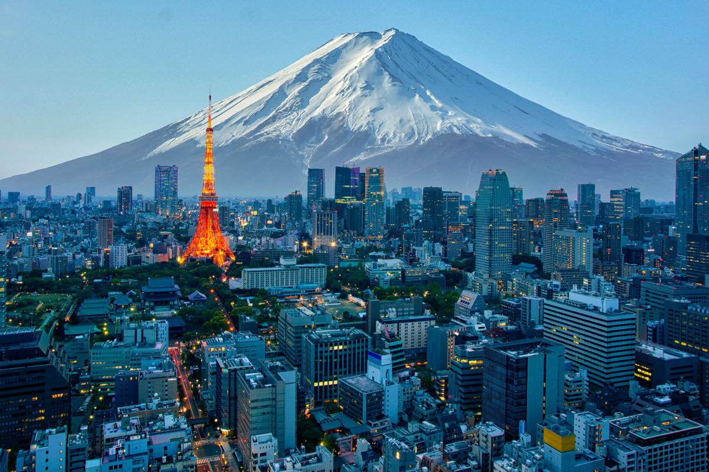

Why Visit Japan?
- Japan is a mesmerizing blend of tradition and modernity. From its ancient temples and shrines to bustling cities filled with cutting-edge technology, Japan offers a unique cultural experience like no other. Whether you're a foodie, an adventurer, a culture enthusiast, or someone simply seeking peace in nature, Japan has something to offer everyone.

Rich Culture and History
- Kyoto: Famous for its traditional tea houses, stunning temples, and serene gardens. Don't miss out on visiting the Fushimi Inari Shrine with its thousands of red torii gates.
- Nara: Home to the iconic Todai-ji Temple and the friendly deer that roam freely in Nara Park.
- Tokyo’s Asakusa District: Explore Senso-ji Temple, one of the oldest and most significant temples in Japan, surrounded by bustling markets.
Amazing Food Scene
- Sushi & Sashimi: Visit Tsukiji Market in Tokyo for the freshest sushi. Or, for a unique experience, head to conveyor-belt sushi restaurants.
- Ramen: Try Japan’s famous ramen in cities like Fukuoka (Hakata-style) or Sapporo (Miso ramen).
- Street Food: Osaka is known for its street food, such as takoyaki (octopus balls) and okonomiyaki (savory pancakes).
Top Things to Do in Japan
- Visit the Temples & Shrines
- Relax in an Onsen (Hot Spring) - Hakone: Located near Mt. Fuji, it’s one of the most famous onsen resorts in Japan.
- Climb Mount Fuji: The ultimate Japanese experience for outdoor enthusiasts. The best time to climb is in the summer months (July-August).
- Admire the Cherry Blossoms:Maruyama Park (Kyoto): A great spot to enjoy hanami (flower viewing) during sakura season.
When to Visit Japan?
- Spring (March to May): The most popular time to visit for cherry blossom season. Ideal for outdoor activities and festivals.
- Summer (June to August): Expect warm weather, but also the chance to attend summer festivals (like Tanabata and Gion Matsuri). Keep in mind that summer can be humid.
- Autumn (September to November): One of the best times for sightseeing, with vibrant autumn leaves in areas like Kyoto and Nikko.
- Winter (December to February): Perfect for experiencing Japan’s snowy landscapes and skiing in regions like Hokkaido. Plus, the hot springs in winter are an unforgettable experience.
Visit Japan Atleast Once!